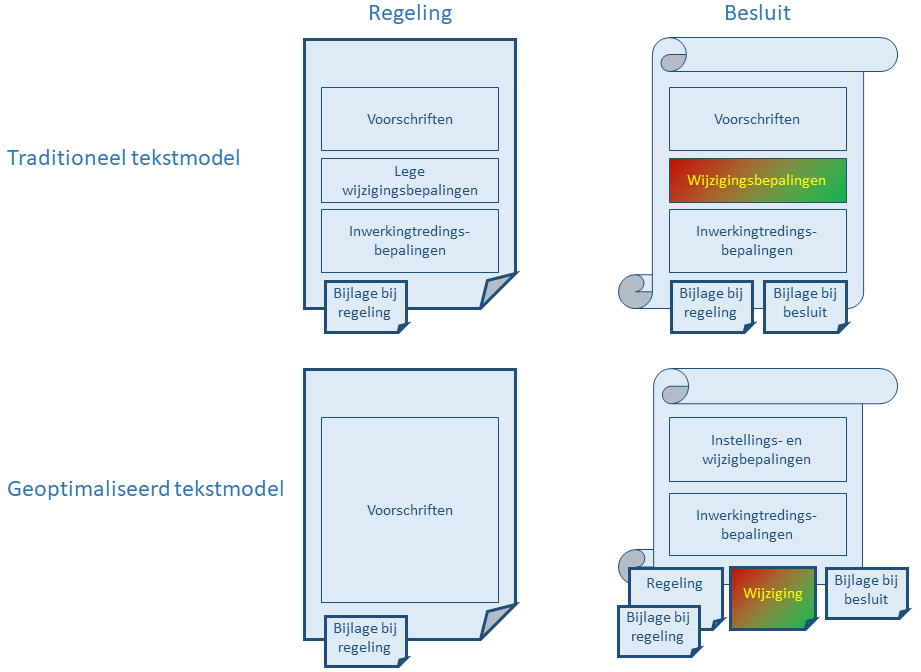

Tekstmodellen voor (artikelgewijze) regelingen en besluiten
Als het gaat om STOP regelingen die artikelsgewijs worden geschreven (zoals het geval is bij voorschriften van algemene strekking) ondersteunt de standaard twee manieren om regelingen en besluiten op te schrijven:
een traditioneel tekstmodel dat de oorsprong heeft in de traditionele manier van consolideren;
een geoptimaliseerd tekstmodel dat beter past bij de doelstellingen van het geïntegreerd proces van bekendmaken en consolideren.
Beide modellen komen overeen met de manier waarop in de huidige praktijk besluiten geschreven worden, met aanpassingen om ondersteuning door automatisering mogelijk te maken.
Fig 1: traditioneel vs geoptimaliseerd tekstmodel

In deze beschrijving van de tekstmodellen wordt alleen globaal op de structuur van de tekst ingegaan; zie Tekstmodellen van Regelingen en Tekstmodellen voor Besluiten voor gedetailleerde beschrijvingen.
Traditioneel tekstmodel
Rechtsboven in figuur 1 is een "traditionele juridische regeling" afgebeeld; in STOP wordt dit een "Besluit" genoemd. Traditioneel bevat het lichaam van een juridische regeling niet alleen de voorschriften maar ook wijzigingsbepalingen (het bruingroen gekleurde onderdeel). In deze bepalingen wordt via wijzigingsinstructies aangegeven hoe een bestaande regeling gewijzigd moet worden. Daarnaast kan de besluittekst de inwerkingtredingsbepalingen bevatten, en kunnen er andere teksten (motivatie, toelichting, bijlagen; in bovenstaande afbeelding collectief weergegeven als bijlage bij regeling en bijlage bij besluit) deel uitmaken van het besluit.
De (initiële versie van de) geconsolideerde regeling staat in Figuur 1 linksboven afgebeeld. De initiële regelingversie komt in STOP overeen met de eerste versie van het besluit. Deze versie is een kopie van het besluit, waaruit teksten zijn weggelaten die geen verband houden met de regelgeving die in de regeling beschreven wordt. Dat betekent dat de inwerkingtredingsbepalingen wel integraal onderdeel van de tekst van de regeling blijven, maar de wijzigingsbepalingen niet. Omdat de wijzigingsbepalingen in het besluit net als de voorschriften in de vorm van een artikel zijn opgenomen, wordt het "wijzigartikel" wel opgenomen maar wordt de inhoud weggelaten (zie als voorbeeld artikelen 9, 10 en 11 van de "Tijdelijke wet bestuurlijke maatregelen terrorismebestrijding").
In dit model is het ook gebruikelijk om artikelen niet te verwijderen uit de regeling als ze geen deel meer uitmaken van de regelgeving, maar om ze als vervallen te markeren. In figuur 1 is dat aangegeven als ""lege wijzigingsbepalingen". Op die manier is later nog te zien dat een artikel ooit bestaan heeft. Behoudens bijzondere omstandigheden worden de inwerkingtredingsbepalingen nooit meer gewijzigd en blijven ze verwijzen naar de initiële inwerkingtreding van de regeling. Als de regeling immers gewijzigd wordt via een wijzigingsbesluit, dan is de inwerkingtreding van de wijziging onderdeel van geconsolideerde versie van het wijzigingsbesluit.
In het traditionele tekstmodel van STOP voor een regeling wordt dit gedrag overgenomen. Als het bevoegd gezag aan het begin van het proces een nieuwe regeling voorbereidt, wordt de regeling al in de vorm van het besluit opgesteld. Bijlagen (inclusief toelichtingen) die geconsolideerd moeten worden, worden onderdeel gemaakt van de regeling. Als later het besluit wordt opgesteld, dan worden de wijzigingsbepalingen gevuld met de wijzigingen conform het renvooimechanisme van STOP. Dan worden ook bijlagen toegevoegd (inclusief toelichtingen en versies van informatieobjecten) die niet als onderdeel van de regeling geconsolideerd worden.
Geoptimaliseerd tekstmodel
Een andere invalshoek is om te beginnen bij de vorm die de geconsolideerde regeling zou moeten hebben om optimaal aan te sluiten bij de doelstellingen van het overkoepelende proces. Het bevoegd gezag wil dan bereiken dat eenieder kennis kan nemen van de geldende (geconsolideerde) regelgeving. Omdat in het proces de (STOP) regeling de tekst levert voor de geconsolideerde regeling, bevat het tekstmodel alleen die onderdelen die relevant zijn om kennis te nemen van de geldende regelgeving. Dat zijn wel de voorschriften en bijlagen die daarbij horen, maar niet de inwerkingtredingsbepalingen van het initiële besluit of wijzigingsbepalingen die alleen relevant zijn bij het instellen van de nieuwe regeling. Artikelen met voorschriften die niet langer relevant zijn worden verwijderd uit de regeling en niet (als vervallen gemarkeerd) nog eindeloos meegenomen naar nieuwe versies van de regeling.
Het besluit heeft ook een andere structuur. Het lichaam van het besluit beschrijft welke regelingen er ingesteld of gewijzigd worden, en geeft informatie over de inwerkingtreding. Een nieuwe regeling of een wijziging van de regeling wordt buiten het lichaam bijgevoegd, net als bijlagen die niet geconsolideerd hoeven te worden.
Dit tekstmodel sluit beter aan bij de doelstellingen van het overkoepelende proces:
De regelingen beschrijven uitsluitend de geldende (of beoogde) regelgeving. In het overkoepelende proces staat het steeds aanpassen van de regeling centraal, en daarbij hoeft geen rekening gehouden te worden met onderdelen die niet gewijzigd mogen worden omdat ze samenhangen met de regelgeving zoals die was bij instelling van de regeling.
Er is een betere scheiding tussen de informatie die het beoogd resultaat is van het proces (de regelgeving in de regeling) en de informatie die nodig is om tot dat resultaat te komen (samenhang tussen wijzigingen, inwerkingtredingsbepalingen in het besluit).
Omdat het lichaam van het besluit geen regelgeving bevat, wordt het alleen bekendgemaakt en ontstaat er geen geconsolideerde regeling met de inhoud van het besluit na bekendmaking.